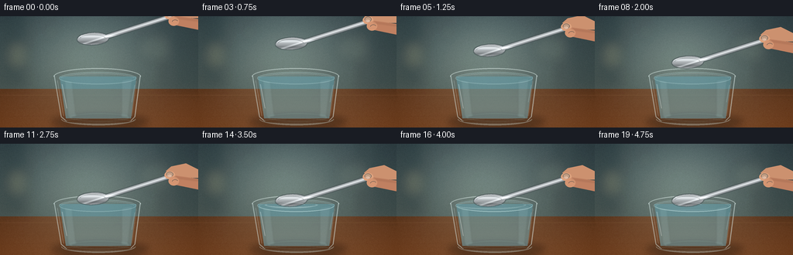
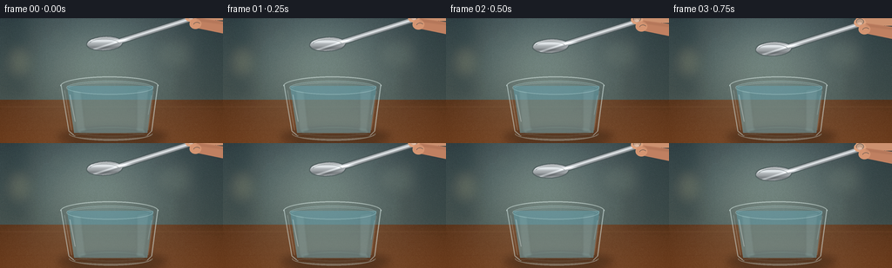

CODING AGENTS AS PIXEL WORLD MODELS
traex/GPT-5.6-Sol · mechanics_0008
点击播放 · 原生 RGB 像素
此结果可播放，但该运行尚未通过最终提交审核。页面展示不代表评测通过。
逐轮保存的候选
回放视频、检查图与代码变化。
每份候选均可单独播放。实际图片检查记录在下方工具轨迹中。
候选 01播放与检查图
点击播放 · 原生 RGB 像素


展开代码变化
--- 上一保存版本
+++ 本次保存版本
@@ -0,0 +1,204 @@
+from pathlib import Path
+import math
+import numpy as np
+from PIL import Image, ImageDraw, ImageFilter
+import artifact_io
+
+# Deterministic, hand-rendered close-up with supersampled vector detail.
+W, H, N, SS = 256, 144, 20, 4
+CW, CH = W * SS, H * SS
+rng = np.random.default_rng(7319)
+
+def S(v): return int(round(v * SS))
+def box(b): return tuple(S(x) for x in b)
+def smooth(a, b, x):
+ u = min(1.0, max(0.0, (x-a)/(b-a)))
+ return u*u*(3-2*u)
+
+def make_background():
+ # softly focused blue-grey kitchen, warming into a walnut tabletop
+ yy, xx = np.mgrid[0:H, 0:W]
+ top = np.empty((H,W,3), np.float32)
+ wall = np.array([71, 87, 91], np.float32)
+ table = np.array([103, 67, 43], np.float32)
+ horizon = 94
+ for y in range(H):
+ if y < horizon:
+ q = y / horizon
+ col = wall + np.array([12, 9, 2])*q
+ else:
+ q = (y-horizon)/(H-horizon)
+ col = table + np.array([25, 15, 8])*q
+ top[y,:,:] = col
+ # vignette and pool of window light behind the glass
+ glow = np.exp(-(((xx-111)/72)**2 + ((yy-51)/58)**2))[:, :, None]
+ top += glow * np.array([36, 39, 34])
+ vign = ((xx-W/2)/(W*.72))**2 + ((yy-H/2)/(H*.9))**2
+ top -= 25*np.clip(vign,0,1)[:,:,None]
+ noise = rng.normal(0,1.4,(H,W,1))
+ top += noise
+ base = Image.fromarray(np.uint8(np.clip(top,0,255))).resize((CW,CH), Image.Resampling.BICUBIC)
+ # distant cabinetry and bokeh; deliberately out of focus
+ distant = Image.new('RGBA',(CW,CH),(0,0,0,0)); d=ImageDraw.Draw(distant,'RGBA')
+ d.rectangle(box((6,0,37,89)), fill=(25,41,45,55)); d.rectangle(box((40,0,43,89)), fill=(205,215,194,18))
+ d.rectangle(box((209,0,256,93)), fill=(22,34,38,48)); d.line((S(218),0,S(218),S(93)),fill=(190,201,189,20),width=S(2))
+ for cx,cy,r,c in [(22,50,12,(244,202,129,25)),(195,41,18,(224,222,178,17)),(66,20,8,(246,231,189,20))]:
+ d.ellipse(box((cx-r,cy-r,cx+r,cy+r)),fill=c)
+ distant=distant.filter(ImageFilter.GaussianBlur(S(7)))
+ base=Image.alpha_composite(base.convert('RGBA'),distant)
+ # wood grain in focus enough to ground the glass
+ grain=Image.new('RGBA',(CW,CH),(0,0,0,0)); g=ImageDraw.Draw(grain,'RGBA')
+ for k in range(34):
+ y=96+rng.random()*48
+ amp=rng.uniform(.15,.65); phase=rng.random()*6.28
+ pts=[]
+ for x in range(0,257,5): pts.append((S(x),S(y+amp*math.sin(x/18+phase))))
+ g.line(pts,fill=(48,25,13,int(rng.integers(5,13))),width=max(1,S(.25)))
+ g.line((0,S(102),CW,S(102)),fill=(233,183,126,13),width=S(1))
+ return Image.alpha_composite(base,grain)
+
+BG=make_background()
+
+def glass_and_water(im, contact, frame_i):
+ # cast shadow
+ lay=Image.new('RGBA',(CW,CH),(0,0,0,0)); d=ImageDraw.Draw(lay,'RGBA')
+ d.ellipse(box((66,126,192,147)),fill=(16,12,9,75))
+ d.ellipse(box((82,130,178,141)),fill=(6,9,9,68))
+ lay=lay.filter(ImageFilter.GaussianBlur(S(4.2))); im.alpha_composite(lay)
+
+ # water column seen through the glass: pale, transparent and gently graded
+ watermask=Image.new('L',(CW,CH),0); m=ImageDraw.Draw(watermask)
+ m.polygon([(S(77),S(78)),(S(176),S(78)),(S(169),S(132)),(S(85),S(132))],fill=138)
+ arr=np.zeros((CH,CW,4),dtype=np.uint8)
+ for y in range(S(73),S(135)):
+ q=(y/SS-73)/62
+ arr[y,:,0]=95+int(20*q); arr[y,:,1]=153+int(17*q); arr[y,:,2]=166+int(17*q); arr[y,:,3]=45+int(20*q)
+ water=Image.fromarray(arr,'RGBA'); water.putalpha(watermask)
+ im.alpha_composite(water)
+
+ # bent light and caustics within the water
+ l=Image.new('RGBA',(CW,CH),(0,0,0,0)); d=ImageDraw.Draw(l,'RGBA')
+ d.polygon([(S(83),S(82)),(S(93),S(84)),(S(98),S(130)),(S(88),S(131))],fill=(211,240,238,22))
+ d.polygon([(S(157),S(83)),(S(171),S(80)),(S(165),S(131)),(S(157),S(131))],fill=(212,242,238,20))
+ d.ellipse(box((90,125,167,137)),outline=(203,240,235,48),width=S(2))
+ l=l.filter(ImageFilter.GaussianBlur(S(1.1))); im.alpha_composite(l)
+
+ # back rim and water's elliptical surface
+ rim=Image.new('RGBA',(CW,CH),(0,0,0,0)); d=ImageDraw.Draw(rim,'RGBA')
+ d.arc(box((69,67,182,89)),180,360,fill=(224,239,235,125),width=S(1.25))
+ d.ellipse(box((76,72,176,88)),fill=(124,177,184,30),outline=(197,229,227,80),width=S(1))
+ d.arc(box((78,74,174,87)),190,350,fill=(236,248,244,61),width=S(.65))
+ im.alpha_composite(rim)
+
+ # sides and base of clear tumbler
+ gl=Image.new('RGBA',(CW,CH),(0,0,0,0)); d=ImageDraw.Draw(gl,'RGBA')
+ d.line([ (S(70),S(77)),(S(79),S(130)),(S(86),S(136)) ],fill=(218,237,235,118),width=S(1.15))
+ d.line([ (S(181),S(77)),(S(174),S(130)),(S(168),S(136)) ],fill=(220,238,236,130),width=S(1.2))
+ d.line([ (S(74),S(83)),(S(82),S(129)) ],fill=(255,255,250,56),width=S(.65))
+ d.line([ (S(176),S(84)),(S(170),S(129)) ],fill=(255,255,250,43),width=S(.7))
+ d.arc(box((79,125,175,141)),0,180,fill=(201,231,229,93),width=S(1))
+ d.arc(box((80,128,173,140)),0,180,fill=(245,251,245,80),width=S(.8))
+ d.ellipse(box((84,132,169,139)),outline=(155,204,205,42),width=S(1))
+ # bright vertical glints
+ d.line((S(80),S(88),S(86),S(119)),fill=(255,255,252,78),width=S(1.1))
+ d.line((S(174),S(89),S(170),S(111)),fill=(255,255,252,46),width=S(.8))
+ im.alpha_composite(gl)
+
+ if contact>0:
+ # expanding capillary rings, clipped exactly to water ellipse
+ rings=Image.new('RGBA',(CW,CH),(0,0,0,0)); rd=ImageDraw.Draw(rings,'RGBA')
+ phase=(frame_i-12)/7
+ strength=math.sin(min(1,contact)*math.pi*.72)*0.75+0.2
+ for j in range(3):
+ age=max(0,min(1,phase-j*.13))
+ if age<=0: continue
+ rw=19+age*46+j*7; rh=3.1+age*5.1
+ alpha=int((1-age)*105*strength)
+ rd.ellipse(box((120-rw,79-rh,120+rw,79+rh)),outline=(230,248,245,alpha),width=S(.65))
+ rd.arc(box((120-rw,79-rh,120+rw,79+rh)),190,350,fill=(68,123,134,alpha//2),width=S(.55))
+ clip=Image.new('L',(CW,CH),0); ImageDraw.Draw(clip).ellipse(box((77,72,176,88)),fill=255)
+ rings.putalpha(Image.composite(rings.getchannel('A'),Image.new('L',(CW,CH),0),clip))
+ im.alpha_composite(rings)
+
+
+def spoon_layer(bx, by):
+ # Mask for a single, coherent polished spoon silhouette.
+ mask=Image.new('L',(CW,CH),0); md=ImageDraw.Draw(mask)
+ # bowl is subtly tilted upward toward handle
+ theta=-math.radians(3); pts=[]
+ for i in range(80):
+ a=2*math.pi*i/80
+ x=bx+20*math.cos(a); y=by+7.6*math.sin(a)
+ dx=x-bx; dy=y-by
+ pts.append((S(bx+dx*math.cos(theta)-dy*math.sin(theta)),S(by+dx*math.sin(theta)+dy*math.cos(theta))))
+ md.polygon(pts,fill=255)
+ hx1,hy1=bx+15,by-2.0; hx2,hy2=bx+99,by-28.5
+ md.line((S(hx1),S(hy1),S(hx2),S(hy2)),fill=255,width=S(5.0))
+ md.ellipse(box((hx2-2.5,hy2-2.5,hx2+2.5,hy2+2.5)),fill=255)
+ # metallic texture: long silver gradients and sharp reflected streaks
+ yy,xx=np.mgrid[0:CH,0:CW]; py=yy/SS; px=xx/SS
+ val=157 + 56*np.exp(-((py-(by-3.0))/2.0)**2) - 42*np.exp(-((py-(by+4.8))/2.5)**2)
+ # alternating reflection along the handle's normal direction
+ line_y=by-2-(px-(bx+15))*.315
+ val += 55*np.exp(-((py-line_y)/1.05)**2)-25*np.exp(-((py-line_y-2.2)/1.0)**2)
+ metal=np.zeros((CH,CW,4),np.uint8)
+ metal[:,:,0]=np.clip(val+10,0,255); metal[:,:,1]=np.clip(val+15,0,255); metal[:,:,2]=np.clip(val+18,0,255); metal[:,:,3]=np.array(mask)
+ out=Image.fromarray(metal,'RGBA')
+ # crisp steel border
+ expanded=mask.filter(ImageFilter.MaxFilter(9)); border=np.array(expanded,dtype=np.int16)-np.array(mask,dtype=np.int16)
+ edge=Image.new('RGBA',(CW,CH),(77,87,89,0)); edge.putalpha(Image.fromarray(np.uint8(np.clip(border*.58,0,255))))
+ out=Image.alpha_composite(edge,out)
+ det=Image.new('RGBA',(CW,CH),(0,0,0,0)); dd=ImageDraw.Draw(det,'RGBA')
+ dd.arc(box((bx-17.5,by-5.8,bx+16.5,by+6.3)),193,347,fill=(60,72,75,120),width=S(.75))
+ dd.arc(box((bx-17,by-6.1,bx+16,by+5.0)),202,337,fill=(255,255,252,160),width=S(.62))
+ # handle highlight
+ dd.line((S(bx+24),S(by-5.4),S(bx+94),S(by-27.2)),fill=(249,252,249,125),width=S(.6))
+ return Image.alpha_composite(out,det)
+
+def hand_layer(bx,by):
+ # Two relaxed fingertips lightly pinch the very end of the handle.
+ hx,hy=bx+99,by-28.5
+ hand=Image.new('RGBA',(CW,CH),(0,0,0,0)); d=ImageDraw.Draw(hand,'RGBA')
+ # index finger comes from upper right, thumb from the right
+ d.polygon([(S(hx-5),S(hy-7)),(S(hx+2),S(hy-13)),(S(240),S(hy-17)),(CW,S(hy-9)),(CW,S(hy+2)),(S(hx+5),S(hy+1))],fill=(202,145,112,255))
+ d.ellipse(box((hx-6.7,hy-7.0,hx+7.0,hy+3.5)),fill=(218,161,126,255))
+ d.polygon([(S(hx+1),S(hy+2)),(S(hx+8),S(hy-1)),(CW,S(hy+3)),(CW,S(hy+17)),(S(hx+8),S(hy+11))],fill=(190,128,98,255))
+ d.ellipse(box((hx-1.5,hy+.1,hx+12,hy+11.8)),fill=(210,149,115,255))
+ # nail and soft creases
+ d.ellipse(box((hx-4.2,hy-6.1,hx+4.5,hy+.5)),fill=(232,181,148,190),outline=(150,99,79,70),width=S(.45))
+ d.arc(box((hx+3,hy+4,hx+11,hy+10)),190,330,fill=(133,84,68,75),width=S(.5))
+ shade=Image.new('RGBA',(CW,CH),(0,0,0,0)); sd=ImageDraw.Draw(shade,'RGBA')
+ sd.line((S(hx+7),S(hy+1),CW,S(hy+5)),fill=(91,55,44,35),width=S(2))
+ shade=shade.filter(ImageFilter.GaussianBlur(S(1.0)))
+ return Image.alpha_composite(hand,shade)
+
+def make_frame(i):
+ t=i/(N-1)
+ # slow cubic placement; contact begins around frame 12 and is held afterward
+ p=smooth(0.0,0.67,t)
+ by=29 + 44.0*p
+ bx=120.0
+ contact=smooth(.61,.72,t)
+ im=BG.copy()
+ glass_and_water(im, contact, i)
+ spoon=spoon_layer(bx,by)
+ im.alpha_composite(spoon)
+ im.alpha_composite(hand_layer(bx,by))
+ if contact>0:
+ # front meniscus crossing the bowl's lower edge communicates actual contact.
+ men=Image.new('RGBA',(CW,CH),(0,0,0,0)); d=ImageDraw.Draw(men,'RGBA')
+ a=int(90*contact)
+ d.arc(box((78,72,175,88)),4,176,fill=(218,242,239,a),width=S(.65))
+ # tiny beads hugging the steel at the point of first touch
+ d.arc(box((103,76.0,138,83.2)),195,347,fill=(237,251,248,int(105*contact)),width=S(.6))
+ im.alpha_composite(men)
+ # subtle cinematic color finishing and downsampled antialiasing
+ rgb=im.convert('RGB').resize((W,H),Image.Resampling.LANCZOS)
+ arr=np.asarray(rgb).astype(np.float32)
+ # mild contrast, preserving bright glass highlights
+ arr=(arr-124)*1.035+124
+ return np.uint8(np.clip(arr,0,255))
+
+frames=np.stack([make_frame(i) for i in range(N)],axis=0)
+artifact_io.save(frames, Path(__file__).resolve().parent)
+print('saved',frames.shape,frames.dtype)
可观测工具轨迹
实际执行的命令与返回图片。
命令 1exit 0
/bin/bash -lc "cat prompt.txt && printf '\\n---RULES---\\n' && cat GENERATION_RULES.md && printf '\\n---SPEC---\\n' && cat task_spec.json"
命令 2exit 0
/bin/bash -lc "find . -maxdepth 2 -type f -printf '%p\\n' | sort && printf '\\nTOOLS\\n' && command -v ffmpeg && command -v python3 && command -v convert || true"
命令 3exit 0
/bin/bash -lc "cat artifact_io.py && python3 - <<'PY'
import PIL,numpy
print('PIL',PIL.__version__,'numpy',numpy.__version__)
PY"命令 4exit 1
/bin/bash -lc "cat > generate.py <<'PY'
from pathlib import Path
import math
import numpy as np
from PIL import Image, ImageDraw, ImageFilter
import artifact_io
# Deterministic, hand-rendered close-up with supersampled vector detail.
W, H, N, SS = 256, 144, 20, 4
CW, CH = W * SS, H * SS
rng = np.random.default_rng(7319)
def S(v): return int(round(v * SS))
def box(b): return tuple(S(x) for x in b)
def smooth(a, b, x):
u = min(1.0, max(0.0, (x-a)/(b-a)))
return u*u*(3-2*u)
def make_background():
# softly focused blue-grey kitchen, warming into a walnut tabletop
yy, xx = np.mgrid[0:H, 0:W]
top = np.empty((H,W,3), np.float32)
wall = np.array([71, 87, 91], np.float32)
table = np.array([103, 67, 43], np.float32)
horizon = 94
for y in range(H):
if y < horizon:
q = y / horizon
col = wall + np.array([12, 9, 2])*q
else:
q = (y-horizon)/(H-horizon)
col = table + np.array([25, 15, 8])*q
top[y,:,:] = col
# vignette and pool of window light behind the glass
glow = np.exp(-(((xx-111)/72)**2 + ((yy-51)/58)**2))[:, :, None]
top += glow * np.array([36, 39, 34])
vign = ((xx-W/2)/(W*.72))**2 + ((yy-H/2)/(H*.9))**2
top -= 25*np.clip(vign,0,1)[:,:,None]
noise = rng.normal(0,1.4,(H,W,1))
top += noise
base = Image.fromarray(np.uint8(np.clip(top,0,255))).resize((CW,CH), Image.Resampling.BICUBIC)
# distant cabinetry and bokeh; deliberately out of focus
distant = Image.new('RGBA',(CW,CH),(0,0,0,0)); d=ImageDraw.Draw(distant,'RGBA')
d.rectangle(box((6,0,37,89)), fill=(25,41,45,55)); d.rectangle(box((40,0,43,89)), fill=(205,215,194,18))
d.rectangle(box((209,0,256,93)), fill=(22,34,38,48)); d.line((S(218),0,S(218),S(93)),fill=(190,201,189,20),width=S(2))
for cx,cy,r,c in [(22,50,12,(244,202,129,25)),(195,41,18,(224,222,178,17)),(66,20,8,(246,231,189,20))]:
d.ellipse(box((cx-r,cy-r,cx+r,cy+r)),fill=c)
distant=distant.filter(ImageFilter.GaussianBlur(S(7)))
base=Image.alpha_composite(base.convert('RGBA'),distant)
# wood grain in focus enough to ground the glass
grain=Image.new('RGBA',(CW,CH),(0,0,0,0)); g=ImageDraw.Draw(grain,'RGBA')
for k in range(34):
y=96+rng.random()*48
amp=rng.uniform(.15,.65); phase=rng.random()*6.28
pts=[]
for x in range(0,257,5): pts.append((S(x),S(y+amp*math.sin(x/18+phase))))
g.line(pts,fill=(48,25,13,int(rng.integers(5,13))),width=max(1,S(.25)))
g.line((0,S(102),CW,S(102)),fill=(233,183,126,13),width=S(1))
return Image.alpha_composite(base,grain)
BG=make_background()
def glass_and_water(im, contact, frame_i):
# cast shadow
lay=Image.new('RGBA',(CW,CH),(0,0,0,0)); d=ImageDraw.Draw(lay,'RGBA')
d.ellipse(box((66,126,192,147)),fill=(16,12,9,75))
d.ellipse(box((82,130,178,141)),fill=(6,9,9,68))
lay=lay.filter(ImageFilter.GaussianBlur(S(4.2))); im.alpha_composite(lay)
# water column seen through the glass: pale, transparent and gently graded
watermask=Image.new('L',(CW,CH),0); m=ImageDraw.Draw(watermask)
m.polygon([(S(77),S(78)),(S(176),S(78)),(S(169),S(132)),(S(85),S(132))],fill=138)
arr=np.zeros((CH,CW,4),dtype=np.uint8)
for y in range(S(73),S(135)):
q=(y/S-73)/62
arr[y,:,0]=95+int(20*q); arr[y,:,1]=153+int(17*q); arr[y,:,2]=166+int(17*q); arr[y,:,3]=45+int(20*q)
water=Image.fromarray(arr,'RGBA'); water.putalpha(watermask)
im.alpha_composite(water)
# bent light and caustics within the water
l=Image.new('RGBA',(CW,CH),(0,0,0,0)); d=ImageDraw.Draw(l,'RGBA')
d.polygon([(S(83),S(82)),(S(93),S(84)),(S(98),S(130)),(S(88),S(131))],fill=(211,240,238,22))
d.polygon([(S(157),S(83)),(S(171),S(80)),(S(165),S(131)),(S(157),S(131))],fill=(212,242,238,20))
d.ellipse(box((90,125,167,137)),outline=(203,240,235,48),width=S(2))
l=l.filter(ImageFilter.GaussianBlur(S(1.1))); im.alpha_composite(l)
# back rim and water's elliptical surface
rim=Image.new('RGBA',(CW,CH),(0,0,0,0)); d=ImageDraw.Draw(rim,'RGBA')
d.arc(box((69,67,182,89)),180,360,fill=(224,239,235,125),width=S(1.25))
d.ellipse(box((76,72,176,88)),fill=(124,177,184,30),outline=(197,229,227,80),width=S(1))
d.arc(box((78,74,174,87)),190,350,fill=(236,248,244,61),width=S(.65))
im.alpha_composite(rim)
# sides and base of clear tumbler
gl=Image.new('RGBA',(CW,CH),(0,0,0,0)); d=ImageDraw.Draw(gl,'RGBA')
d.line([ (S(70),S(77)),(S(79),S(130)),(S(86),S(136)) ],fill=(218,237,235,118),width=S(1.15))
d.line([ (S(181),S(77)),(S(174),S(130)),(S(168),S(136)) ],fill=(220,238,236,130),width=S(1.2))
d.line([ (S(74),S(83)),(S(82),S(129)) ],fill=(255,255,250,56),width=S(.65))
d.line([ (S(176),S(84)),(S(170),S(129)) ],fill=(255,255,250,43),width=S(.7))
d.arc(box((79,125,175,141)),0,180,fill=(201,231,229,93),width=S(1))
d.arc(box((80,128,173,140)),0,180,fill=(245,251,245,80),width=S(.8))
d.ellipse(box((84,132,169,139)),outline=(155,204,205,42),width=S(1))
# bright vertical glints
d.line((S(80),S(88),S(86),S(119)),fill=(255,255,252,78),width=S(1.1))
d.line((S(174),S(89),S(170),S(111)),fill=(255,255,252,46),width=S(.8))
im.alpha_composite(gl)
if contact>0:
# expanding capillary rings, clipped exactly to water ellipse
rings=Image.new('RGBA',(CW,CH),(0,0,0,0)); rd=ImageDraw.Draw(rings,'RGBA')
phase=(frame_i-12)/7
strength=math.sin(min(1,contact)*math.pi*.72)*0.75+0.2
for j in range(3):
age=max(0,min(1,phase-j*.13))
if age<=0: continue
rw=19+age*46+j*7; rh=3.1+age*5.1
alpha=int((1-age)*105*strength)
rd.ellipse(box((120-rw,79-rh,120+rw,79+rh)),outline=(230,248,245,alpha),width=S(.65))
rd.arc(box((120-rw,79-rh,120+rw,79+rh)),190,350,fill=(68,123,134,alpha//2),width=S(.55))
clip=Image.new('L',(CW,CH),0); ImageDraw.Draw(clip).ellipse(box((77,72,176,88)),fill=255)
rings.putalpha(Image.composite(rings.getchannel('A'),Image.new('L',(CW,CH),0),clip))
im.alpha_composite(rings)
def spoon_layer(bx, by):
# Mask for a single, coherent polished spoon silhouette.
mask=Image.new('L',(CW,CH),0); md=ImageDraw.Draw(mask)
# bowl is subtly tilted upward toward handle
theta=-math.radians(3); pts=[]
for i in range(80):
a=2*math.pi*i/80
x=bx+20*math.cos(a); y=by+7.6*math.sin(a)
dx=x-bx; dy=y-by
pts.append((S(bx+dx*math.cos(theta)-dy*math.sin(theta)),S(by+dx*math.sin(theta)+dy*math.cos(theta))))
md.polygon(pts,fill=255)
hx1,hy1=bx+15,by-2.0; hx2,hy2=bx+99,by-28.5
md.line((S(hx1),S(hy1),S(hx2),S(hy2)),fill=255,width=S(5.0))
md.ellipse(box((hx2-2.5,hy2-2.5,hx2+2.5,hy2+2.5)),fill=255)
# metallic texture: long silver gradients and sharp reflected streaks
yy,xx=np.mgrid[0:CH,0:CW]; py=yy/SS; px=xx/SS
val=157 + 56*np.exp(-((py-(by-3.0))/2.0)**2) - 42*np.exp(-((py-(by+4.8))/2.5)**2)
# alternating reflection along the handle's normal direction
line_y=by-2-(px-(bx+15))*.315
val += 55*np.exp(-((py-line_y)/1.05)**2)-25*np.exp(-((py-line_y-2.2)/1.0)**2)
metal=np.zeros((CH,CW,4),np.uint8)
metal[:,:,0]=np.clip(val+10,0,255); metal[:,:,1]=np.clip(val+15,0,255); metal[:,:,2]=np.clip(val+18,0,255); metal[:,:,3]=np.array(mask)
out=Image.fromarray(metal,'RGBA')
# crisp steel border
expanded=mask.filter(ImageFilter.MaxFilter(9)); border=np.array(expanded,dtype=np.int16)-np.array(mask,dtype=np.int16)
edge=Image.new('RGBA',(CW,CH),(77,87,89,0)); edge.putalpha(Image.fromarray(np.uint8(np.clip(border*.58,0,255))))
out=Image.alpha_composite(edge,out)
det=Image.new('RGBA',(CW,CH),(0,0,0,0)); dd=ImageDraw.Draw(det,'RGBA')
dd.arc(box((bx-17.5,by-5.8,bx+16.5,by+6.3)),193,347,fill=(60,72,75,120),width=S(.75))
dd.arc(box((bx-17,by-6.1,bx+16,by+5.0)),202,337,fill=(255,255,252,160),width=S(.62))
# handle highlight
dd.line((S(bx+24),S(by-5.4),S(bx+94),S(by-27.2)),fill=(249,252,249,125),width=S(.6))
return Image.alpha_composite(out,det)
def hand_layer(bx,by):
# Two relaxed fingertips lightly pinch the very end of the handle.
hx,hy=bx+99,by-28.5
hand=Image.new('RGBA',(CW,CH),(0,0,0,0)); d=ImageDraw.Draw(hand,'RGBA')
# index finger comes from upper right, thumb from the right
d.polygon([(S(hx-5),S(hy-7)),(S(hx+2),S(hy-13)),(S(240),S(hy-17)),(CW,S(hy-9)),(CW,S(hy+2)),(S(hx+5),S(hy+1))],fill=(202,145,112,255))
d.ellipse(box((hx-6.7,hy-7.0,hx+7.0,hy+3.5)),fill=(218,161,126,255))
d.polygon([(S(hx+1),S(hy+2)),(S(hx+8),S(hy-1)),(CW,S(hy+3)),(CW,S(hy+17)),(S(hx+8),S(hy+11))],fill=(190,128,98,255))
d.ellipse(box((hx-1.5,hy+.1,hx+12,hy+11.8)),fill=(210,149,115,255))
# nail and soft creases
d.ellipse(box((hx-4.2,hy-6.1,hx+4.5,hy+.5)),fill=(232,181,148,190),outline=(150,99,79,70),width=S(.45))
d.arc(box((hx+3,hy+4,hx+11,hy+10)),190,330,fill=(133,84,68,75),width=S(.5))
shade=Image.new('RGBA',(CW,CH),(0,0,0,0)); sd=ImageDraw.Draw(shade,'RGBA')
sd.line((S(hx+7),S(hy+1),CW,S(hy+5)),fill=(91,55,44,35),width=S(2))
shade=shade.filter(ImageFilter.GaussianBlur(S(1.0)))
return Image.alpha_composite(hand,shade)
def make_frame(i):
t=i/(N-1)
# slow cubic placement; contact begins around frame 12 and is held afterward
p=smooth(0.0,0.67,t)
by=29 + 44.0*p
bx=120.0
contact=smooth(.61,.72,t)
im=BG.copy()
glass_and_water(im, contact, i)
spoon=spoon_layer(bx,by)
im.alpha_composite(spoon)
im.alpha_composite(hand_layer(bx,by))
if contact>0:
# front meniscus crossing the bowl's lower edge communicates actual contact.
men=Image.new('RGBA',(CW,CH),(0,0,0,0)); d=ImageDraw.Draw(men,'RGBA')
a=int(90*contact)
d.arc(box((78,72,175,88)),4,176,fill=(218,242,239,a),width=S(.65))
# tiny beads hugging the steel at the point of first touch
d.arc(box((103,76.0,138,83.2)),195,347,fill=(237,251,248,int(105*contact)),width=S(.6))
im.alpha_composite(men)
# subtle cinematic color finishing and downsampled antialiasing
rgb=im.convert('RGB').resize((W,H),Image.Resampling.LANCZOS)
arr=np.asarray(rgb).astype(np.float32)
# mild contrast, preserving bright glass highlights
arr=(arr-124)*1.035+124
return np.uint8(np.clip(arr,0,255))
frames=np.stack([make_frame(i) for i in range(N)],axis=0)
artifact_io.save(frames, Path(__file__).resolve().parent)
print('saved',frames.shape,frames.dtype)
PY
python3 generate.py"命令 5exit 0
/bin/bash -lc "sed -i 's/y\\/S-73/y\\/SS-73/' generate.py python3 generate.py ls -lh pixels.npz index.html inspection.png frames/00.png frames/19.png"
命令 6exit 0
/bin/bash -lc "python3 - <<'PY'
import numpy as np, json
from PIL import Image
for i in [10,11,12,13,14,15,19]:
a=np.array(Image.open(f'frames/{i:02}.png'))
print(i,a.shape,a.dtype,a.min(),a.max(),round(float(a.mean()),2))
z=np.load('pixels.npz')['pixels']
print('pixels',z.shape,z.dtype)
print('spec',json.load(open('task_spec.json')))
PY"命令 7exit 0
/bin/bash -lc 'git status --short 2>/dev/null || true'
视觉工具实际返回图片 1

保存候选 1 份；完成命令 7 次；可验证图片返回 1 张。原始 API 响应与完整日志保留在本地。